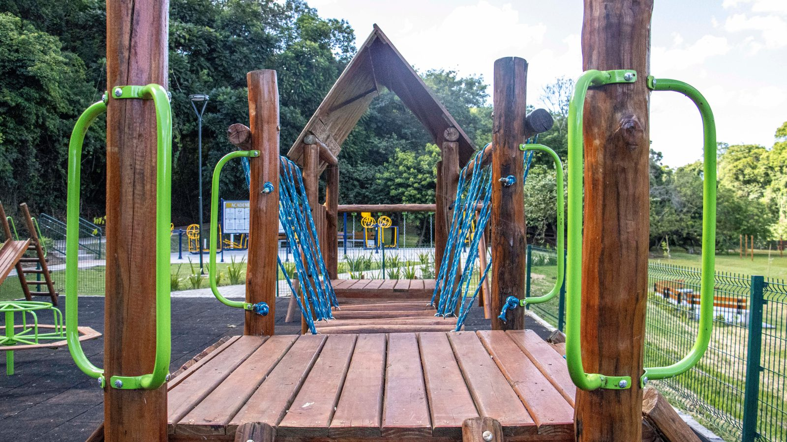

Itapema · Infraestrutura
Itapema · InfraestruturaA Meia Praia ganhou a segunda rua asfaltada do Avança Itapema em cinco dias, e a 250 estava na primeira lista do programa havia 419 dias
Outra obra da cidade, e outro prazo que esticou.
A Prefeitura de Itapema assinou em 22 de setembro o Contrato nº 164/2026, de R$ 307.925,78, para implantar uma estrutura recreativa na Praça Edegar Von Buettner. O prazo é de seis meses. É a segunda obra contratada para a mesma praça em dois anos: a revitalização de 2024 precisou de seis termos aditivos e 240 dias além do prazo original. A linha do tempo é nossa, montada sobre dez publicações do Diário Oficial dos Municípios.
Em 30 segundos · Modo de Leitura, formato original Santa Informa
Itapema contratou obra nova numa praça.
É a Praça Edegar Von Buettner.
O contrato é o nº 164/2026.
Foi assinado em 22 de setembro.
O valor é R$ 307.925,78.
O objeto é uma estrutura recreativa.
A empresa é a Santos e Santana Construções.
O prazo de vigência é de seis meses.
Isso leva a conta para 22 de março de 2027.
A licitação foi a Concorrência Eletrônica 03.004.2026.
O edital saiu em 29 de junho.
As propostas fecharam em 14 de julho.
A homologação saiu em 18 de setembro.
Do edital à assinatura foram 85 dias.
A mesma praça já teve outra obra.
Foi o Contrato nº 091/2024, com outra empresa.
O objeto era a revitalização da praça.
O prazo original terminava em 1º de fevereiro de 2025.
Vieram seis termos aditivos de prazo.
Somados, deram 240 dias a mais.
A execução foi até 29 de setembro de 2025.
Prorrogar prazo de obra é permitido em lei.
Nenhum documento diz em que bairro fica a praça.
Essa soma e essa linha do tempo são contas nossas.
InfraestruturaPublicada em Redação Santa Informa

A Prefeitura de Itapema assinou em 22 de setembro o Contrato nº 164/2026, no valor de R$ 307.925,78, para a execução de obra de implantação de estrutura recreativa na Praça Edegar Von Buettner. A contratada é a Santos e Santana Construções e Serviços, e o prazo de vigência é de seis meses contados da assinatura, o que leva a conta para 22 de março de 2027. É a segunda obra contratada para a mesma praça em dois anos. A primeira, a revitalização assinada em 2024 com outra empresa, precisou de seis termos aditivos e 240 dias além do prazo original para chegar ao fim. Essa linha do tempo é nossa, montada sobre dez publicações do Diário Oficial dos Municípios.
O caminho da obra de agora começou em 29 de junho, quando saiu o extrato da Concorrência Eletrônica nº 03.004.2026, do Processo 105/2026. O recebimento de propostas ficou aberto até as 11h de 14 de julho, e a etapa de lances começou um minuto depois. A homologação veio em 18 de setembro, assinada pelo prefeito, e o contrato foi assinado quatro dias depois. Do fechamento das propostas à homologação passaram 66 dias. Do edital à assinatura, 85 dias. O objeto inclui todo o material e a mão de obra, conforme memorial descritivo, projetos, planilha orçamentária e cronograma físico-financeiro anexos ao edital.
A praça já tinha aparecido no Diário Oficial antes. O Contrato nº 091/2024, firmado com a Malacarne Engenharia e Construtora a partir do Edital nº 07.049.2024, tratava da revitalização da praça, com fornecimento de materiais e mão de obra. O prazo original terminava em 1º de fevereiro de 2025. Daí em diante vieram seis prorrogações, todas assinadas pelo prefeito: 60 dias em janeiro de 2025, 30 em abril, 30 no fim de abril, 30 em maio, 30 em junho e mais 60 em julho. A soma dá 240 dias, e a execução foi empurrada até 29 de setembro de 2025. Prorrogar prazo de obra é coisa prevista na Lei 14.133/2021 e acontece o tempo todo em contrato público. O que a série mostra é o tamanho do acréscimo nesse caso: oito meses sobre o prazo combinado.
Quem usa a praça tem uma data para guardar. Contados da assinatura, os seis meses do contrato novo vencem em 22 de março de 2027, já passada a temporada de verão. O mesmo artigo 105 da Lei 14.133/2021 que permitiu as prorrogações da obra anterior está citado neste contrato, então o prazo pode ser esticado do mesmo jeito. Vale registrar uma diferença de grafia entre os documentos: os atos de 2024 e 2025 escrevem Edegar Von Buettner, e os de 2026 escrevem Edgar Von Buettner. Todos falam da mesma praça de Itapema.
O resumo de 30 segundos está no topo e a versão completa é o texto acima. Aqui ficam as três leituras da casa sobre o mesmo assunto.
Clara, a otimista
Praça com estrutura recreativa é das coisas que mais rendem por real gasto numa cidade que cresceu para cima. Quem mora em apartamento pequeno usa a praça como quintal, e o quintal coletivo atende criança, idoso e quem só quer sentar no fim da tarde sem pagar nada por isso.
E o processo desta vez foi por concorrência eletrônica aberta, com edital publicado, prazo de propostas, etapa de lances e homologação assinada. Cada passo virou papel no Diário Oficial, e foi justamente por isso que deu para montar a história inteira da praça aqui. Cidade que publica permite acompanhar, e obra acompanhada costuma andar melhor.
Seu Prudêncio, o criterioso
Merece atenção o histórico. Seis prorrogações no contrato anterior da mesma praça, somando 240 dias, é informação que vale ter à mão quando o assunto é prazo. Prorrogar é legal e é comum, e ninguém aqui está dizendo o contrário. O ponto é que o prazo de seis meses assinado agora nasce com esse antecedente, e o artigo 105 citado no contrato novo é o mesmo que permitiu esticar o antigo.
Vale acompanhar mais dois pontos. O primeiro é o endereço: um contrato de R$ 307,9 mil sai sem que nenhum documento público diga em que bairro a obra vai acontecer, e isso atrapalha quem quisesse ir olhar. O segundo é a comparação: sem o valor da obra de 2024 em fonte aberta, não dá para dizer quanto a praça já custou no total. Uma sugestão útil, e barata: pôr o bairro e o endereço no extrato, como já se faz com a rua nas obras de pavimentação.
Registro o que está bem feito. A escolha foi por concorrência eletrônica, com quinze dias de propostas abertas, e os três atos principais saíram publicados: edital, homologação e contrato. O prazo de vigência está escrito, o valor global está escrito e a empresa está identificada com CNPJ. É desse tipo de publicação que se faz acompanhamento de obra, e é bom que exista.
Caco, o sarcástico
A praça de Itapema tem currículo. Em 2024 foi revitalizada, com prazo que terminava em fevereiro de 2025 e terminou mesmo em setembro. Agora ganha estrutura recreativa, com prazo para março de 2027. A praça não envelhece, a praça se atualiza por versão.
E o melhor é que ninguém sabe onde ela fica. Dez documentos oficiais, dois contratos, uma concorrência eletrônica, seis aditivos, e em nenhum lugar alguém escreveu o bairro. O morador que quiser fiscalizar vai ter que procurar a obra de bicicleta.
Agora sério, porque aqui tem informação útil: se você mora perto de uma praça em Itapema que foi reformada no ano passado e viu tapume voltando, provavelmente é essa. E o prazo que interessa é 22 de março de 2027, não o verão. Quem estava contando com brinquedo novo nas férias, é bom já ir ajustando o plano.
Fontes: o valor de R$ 307.925,78, o prazo de seis meses, a empresa contratada e a assinatura em 22 de setembro estão no extrato do Contrato nº 164/2026, publicado pela Prefeitura de Itapema no Diário Oficial dos Municípios de Santa Catarina. A homologação de 18 de setembro está no extrato de termo de homologação do Processo nº 105/2026. As datas do edital, do fechamento das propostas e da etapa de lances estão no extrato da Concorrência Eletrônica nº 03.004.2026. O contrato de 2024 e as seis prorrogações estão nos extratos do 1º, 2º, 3º, 4º, 5º e 6º termos aditivos ao Contrato nº 091/2024. A soma de 240 dias, os 66 dias entre propostas e homologação, os 85 dias entre edital e assinatura e a data de 22 de março de 2027 são contas nossas, feitas sobre as datas desses documentos. Todas as páginas foram abertas e conferidas nesta sexta-feira.
Itapema · InfraestruturaOutra obra da cidade, e outro prazo que esticou.
 Itapema · Poder Público
Itapema · Poder PúblicoComo outra licitação da cidade andou neste ano.
 Itapema · Poder Público
Itapema · Poder PúblicoDe onde sai o dinheiro das obras da cidade.